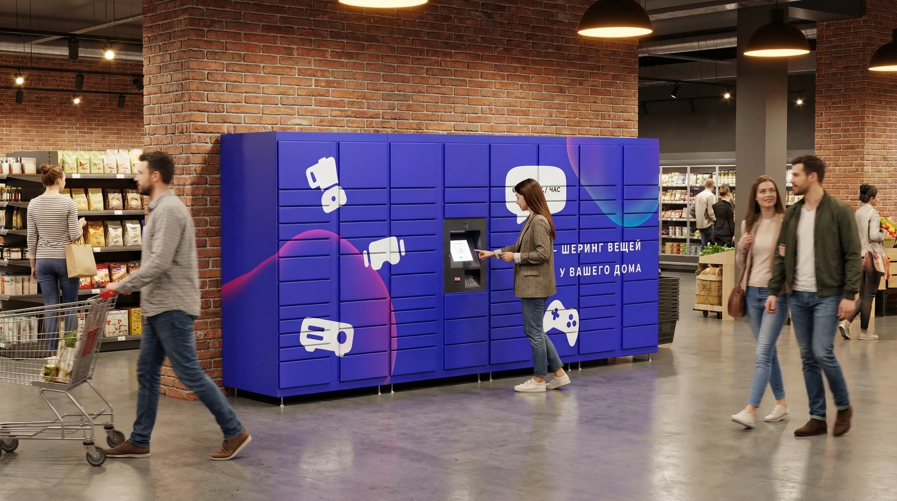
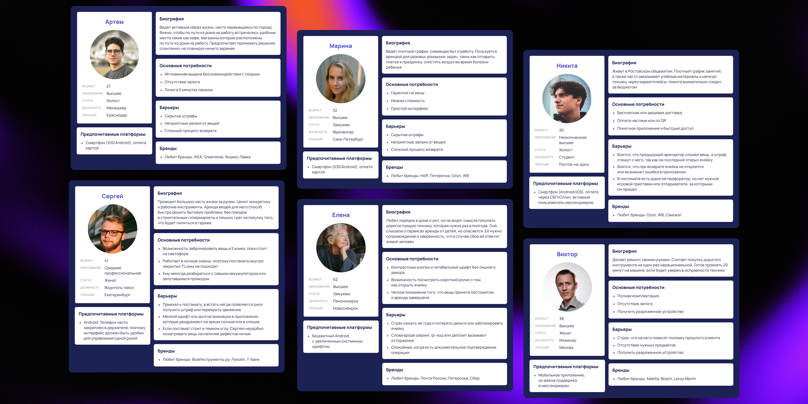
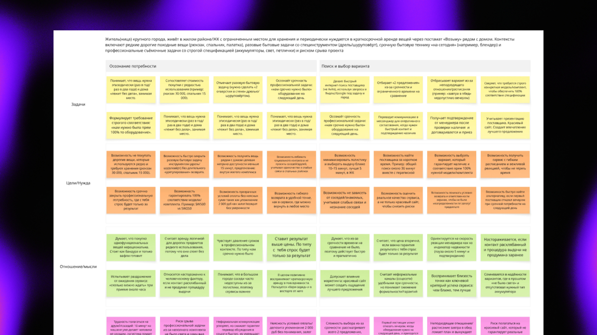
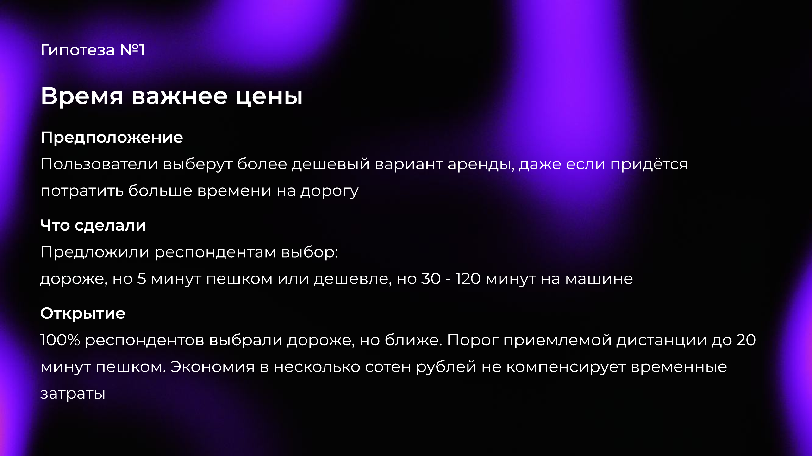
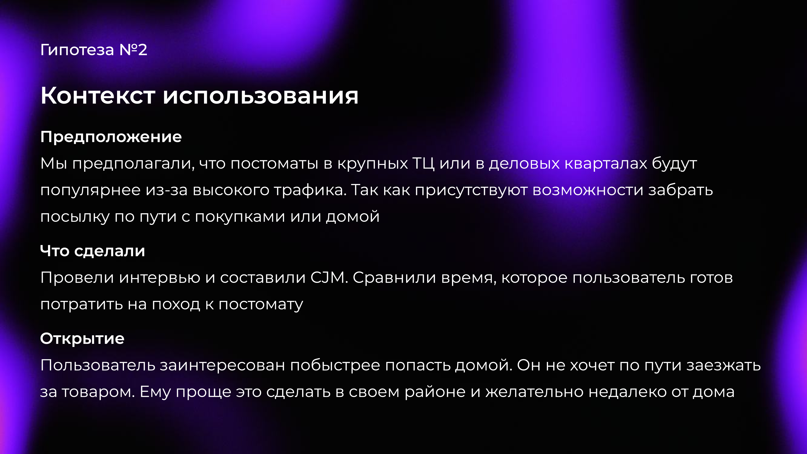
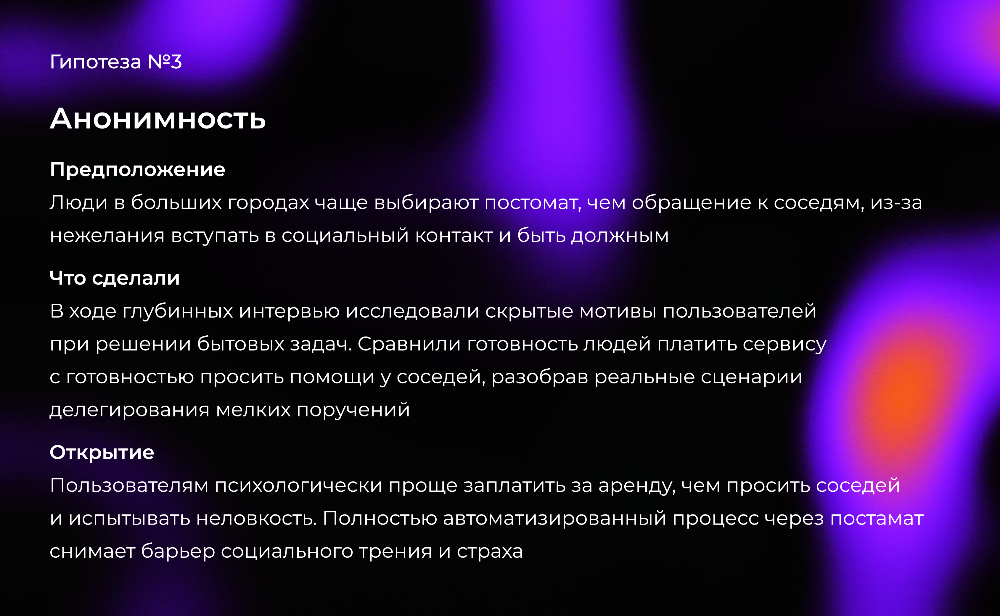
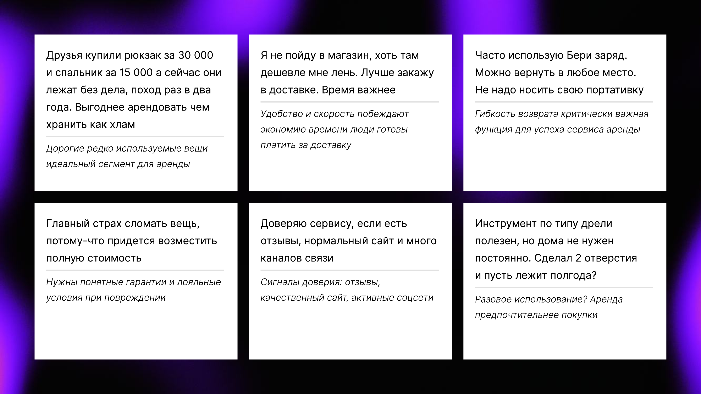

О проекте
Роль: UX-исследователь
Тип: Проведение исследований
Методы: Глубинные интервью, CJM, Users Persons
Инструменты: Figma
Тип: Проведение исследований
Методы: Глубинные интервью, CJM, Users Persons
Инструменты: Figma
Задача
Провести серию интервью и исследовани с пользователями, чтобы подтвердить или опровергнуть ключевые идеи по проекту
Проблема
Риск запустить проект, который не найдет своего пользователя. Понять нужен ли людям постамат, в каких локациях он будет реально востребован и какие задачи должен решать, чтобы им пользовались

Мой подход
Прежде чем тратить ресурсы на разработку, я решила проверить базовые предположения через CustDev. Определила кто наш пользователь и какие задачи пытается решить. Благодаря этому позволит сфокусировать исследование на правильных вопросах

Что я поняла?
Заметила, что всех этих людей объединяет одно, то что они не любят быть зависимыми от других. Тогда я подумала, а может, дело не в самом постамате, а в том, что люди хотят все делать сами и тогда, когда им удобно. Чтобы это проверить, я решила посмотреть на ситуацию не как на доставку вещей, а как способ закрыть внутреннюю потребность. Решила проверить эту гипотезу, используя методологию Jobs To Be Done

Подтверждение
Я поняла, что на самом деле люди хотят независимости и контроля над процессом, а не просто забрать посылку. Это открытие полностью изменило мой взгляд на задачу. Прежде чем придумывать свои решения, я решила посмотреть на конкурентов: может быть, они уже как‑то удовлетворяют эту потребность? А если нет это значит, есть свободная ниша, которую можно занять



Голос клиента
Прямые цитаты из интервью, которые подтверждают инсайты

Анализ данных
Интервью опровергли 2 из 3 изначальных предположений. Теперь я знаю, что не работает. Чтобы визуализировать весь путь пользователя и найти точки для улучшения, я построила CJM на основе собранных данных

Итоги
5
глубинных интервью
3
проверенных гипотез
Ключевые решения
Пользователей больше пугает сложный интерфейс и технические сбои, чем кража посылок
Постоматы в жилых районах востребованнее, чем в ТЦ или бизнес-центрах
Автоматизация снимает социальный барьер и готовность платить за это выше ожидаемой
К чему мы пришли?
Исследование полностью изменило наше понимание продукта и целевой аудитории
Мы начинали с гипотезы, что постаматы нужно размещать в ТЦ и бизнес-центрах с высоким трафиком, а главный барьер для пользователей страх за сохранность вещей